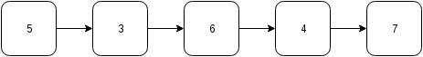

控制流程¶
到目前為止，我們的程式都是由上往下依序執行。透過控制流程，可以藉由改變程式執行的順序而達到不同的效果。
控制流程分為兩種：
- 條件控制 (conditional)
- 迴圈 (loop)
我們將在本文中介紹這些控制流程。
條件控制¶
條件控制的作用在判斷，符合特定條件時，才執行特定區塊內的程式碼，使得程式可以依不同情境改變其行為。Rust 的條件控制有 if 和 match。
if¶
最常用的條件敘述為 if，其想法如以下流程圖：
虛擬碼 (pseudo code) 是一種介於文字敘述和程式碼間的程式表達方式，在撰寫程式碼前，可先使用虛擬碼整理流程，其好處在於可用抽象的方式表達程式的執行步驟。虛擬碼沒有固定的撰寫方式，有些會寫得很像文字，有些會寫得很像數學公式或程式碼。在撰寫虛擬碼時，會先省略程式碼的實作細節，專注在抽象思路上。
將 if 寫成虛擬碼如下：
if condition {
statement
}
以下是一個實例：
fn main() {
let x = 3;
if x > 0 {
println!("x is larger than zero");
}
}
if 還可以選擇性加入 else 區塊，其想法如下：
寫成虛擬碼如下：
if condition {
statement 1
} else {
statement 2
}
以下是一個實例：
fn main() {
let x = 3;
if x > 10 {
println!("x is larger than 10");
} else {
println!("x is not larger than 10");
}
}
如果有更複雜的條件，可以用 if-else if-else，其想法如下：
寫成虛擬碼如下：
if condition 1 {
statement 1
} else if condition 2 {
statement 2
} else {
statement 3
}
其中 else if 區塊可視需要重覆多次，而最後的 else 區塊可省略。
以下是一個實例：
fn main() {
let x = 0;
if x > 0 {
println!("x is larger than zero");
} else if x == 0 {
println!("x is equal to zero");
} else { // x < 0
println!("x is smaller than zero");
}
}
if 也可以作為回傳值，如下例：
fn main() {
let score = 83;
let grade = if score > 90 {
"A"
} else if score > 80 {
"B"
} else if score > 70 {
"C"
} else if score > 60 {
"D"
} else {
"F"
};
assert_eq!(grade, "B");
}
利用 if 回傳值時，要注意兩點。首先，回傳值不要加分號 ;`，第二，if 區塊後要加分號。在 Rust 中，沒加分號的程式碼為表達式 (expression)，而有加分號的程式碼為敘述 (statement)。在本程式中，"A"、"B" ... "F" 皆為回傳值，視為表達式，if 區塊本身也為表達式。除了回傳值以外，程式碼都要寫成敘述，故最後需再加上分號。
match¶
對於多個 if-else if-else，可以用 match 簡化。範例如下：
fn main() {
let grade = "A";
match grade {
"A" => println!("Wonderful"),
"B" => println!("Good"),
"C" => println!("So so"),
"D" => println!("It could be better"),
"F" => println!("Oh, oh"),
_ => println!("Unknown grade"), // Error on removal.
}
}
雖然 Rust 的 match 看起來類似其他語言的 switch，但是，match 要列舉出所有可能的情形，否則會引發錯誤。像是下列看似正常的程式：
fn main() {
let grade = "A";
match grade {
"A" => println!("Wonderful"),
"B" => println!("Good"),
"C" => println!("So so"),
"D" => println!("It could be better"),
"F" => println!("Oh, oh"),
}
}
卻引發了以下錯誤：
error[E0004]: non-exhaustive patterns: `&_` not covered
通常，就是在最後一個條件加上一個底線 _ ，作為啞變數，代表所有其他未符合的情形即可。
match 和 if 相同，也可以做為回傳值。如下例：
fn main() {
let char = 'c';
let sound = match char {
'A' | 'a' | 'E' | 'e' | 'I' | 'i' | 'O' | 'o' | 'U' |'u' => "vowel",
'A' ... 'Z' | 'a' ... 'z' => "consonant",
_ => "other"
};
assert_eq!(sound, "consonant");
}
在本程式中，只要符合 vowel 的，都會回傳 vowel，所以，我們在第二個條件以所有的英文字母為條件也沒關係，符合 vowel 的部分已排除 (回想 if-else if-else 的流程圖)。
迴圈¶
迴圈的作用在重覆，符合特定條件時，重覆執行某區塊的程式碼，減少輸入重覆的程式碼。Rust 的迴圈有 loop、while 和 for。
loop¶
loop 是最簡單的一種迴圈，其想法如下：
一進入 loop 迴圈後，就不間斷地反覆執行區塊內的程式碼，也就是俗稱的無窮迴圈。無窮迴圈可能是迴圈條件沒寫好所造成的 bug，不過，某些程式也是會用到無窮迴圈，像是 遊戲引擎就是一個很大的無窮迴圈。通常無窮迴圈會搭配中斷敘述，在本章後面會提到相關的內容。
如果寫成虛擬碼則是以下形式：
loop {
statement
}
以下是程式範例：
fn main() {
loop {
println!("Hello, World");
}
}
註：讀者執行此程式後，可按 Ctrl + c 中斷此程式。
while¶
while 在程式滿足終止條件前，會不間斷地執行該區塊內的程式碼。其想法如下：
我們在使用 while 時，會在其區塊內加入改變程式狀態的程式碼，否則，就變無窮迴圈了，這通常不會是我們期待的效果。
若寫成虛擬碼，其形式如下：
while condition {
statement
}
以下是實例：
fn main() {
let mut count = 10;
while count > 0 {
println!("Count down {}", count);
count -= 1;
}
}
以下的 while 迴圈和 loop 等價：
fn main() {
while true {
println!("Hello, World");
}
}
但是，Rust 官方手冊有提到，如果在程式碼中明確想用無窮迴圈時，loop 比 while true 來得好，這會影響到程式的優化。
for¶
for 迴圈和 while 迴圈不同，for 會有明確的執行次數。Rust 的 for 迴圈的想法如下：
在這個圖中，迭代器 (iterator) 是一個相對陌生的概念。首先，要知道容器 (container) 的概念，容器用來存放資料，程式設計者可操作容器，藉此處理資料。以下是一個假想的容器：
讀者可以想像得到，對於不同的容器，走訪其內部的資料的方式各自不同。透過迭代器，使用者可以在不知道容器內部實作的情形下，走訪某個容器中所有的資料。for 會自動走訪迭代器，並在迭代器結束時中斷迴圈。
以虛擬碼的形式表示如下：
for variable in iterator {
statement
}
在 Rust 中，透過 range 即可提供迭代器。假設我們要從 1 數到 10，用 range 會寫成 1..11，其中包括起始 1，但不包括結尾 11。以下為實例：
fn main() {
// Iterate from 1 to 10
for i in 1..(10+1) {
println!("{}", i);
}
}
如果我們不需要使用迭代器的計數，只要執行特定的次數，可使用啞變數，故程式改寫如下：
fn main() {
for _ in 1..(10+1) {
println!("Hello, World");
}
}
如果我們的計數不是以 1 遞增呢？現階段來說，要使用一些函數式程式設計的方法，對初學者來說可能略為困難。實例如下：
fn main() {
for i in (1..).filter(|x| x % 2 == 1).take(5) {
println!("{}", i);
}
}
讀者可能覺得迭代器部分的程式碼較難理解，這裡說明一下。首先，(1..) 代表此迭代器從 0 開始，每次遞增 1，遞增無限次。接著，filter(|x| x % 2 == 1) 的作用是對迭代器的每個資料進行過濾，對於執行結果為真的資料就回傳，會得到一個新的迭代器。最後，take(5) 表示我們取迭代器的前五個項目。每個函數間用 . 串連在一起，所以，就是 (1..).filter(|x| x % 2 == 1).take(5)。由於 Rust 內部使用 lazy evaluation 的技術，這樣寫不會造成程式無法停止。我們將於後續章節介紹 lazy evaluation 的觀念。
Rust nightly 版本 (於 2016 年 12 月 13 日實測)，使用了新的函數 step_by，使得計數的撰寫變簡單。實例如下：
#![feature(step_by)]
fn main() {
for i in (1..).step_by(2).take(5) {
println!("{}", i);
}
}
由於此項目尚未穩定下來，雖然有這個方法，但不建議於平日的程式碼中使用。或者，可以用等效的 while 迴圈代替，範例如下：
fn main() {
let mut i = 1;
while i < 10 {
println!("{}", i);
i += 2;
}
}
改變迴圈運作¶
我們看一下以下的範例：
fn main() {
let mut i = 1;
let mut flag = false;
while !flag {
println!("{}", i);
i += 1;
if i > 5 {
flag = true;
}
}
}
在這個程式中，我們使用 flag 這個變數搭配 while 迴圈來控制迴圈的運作。除了利用程式狀態外，Rust 提供 break 和 continue 這兩個關鍵字，使得迴圈的控制更簡潔。
break 的作用是中斷迴圈，通常會寫在條件控制內。以上的範例可以改寫如下：
fn main() {
let mut i = 1;
loop {
println!("{}", i);
i += 1;
if i > 5 {
break;
}
}
}
continue 不會中斷迴圈，但會跳過此迴圈內該指令之後的程式碼。範例如下：
fn main() {
for i in 1..11 {
if i % 2 == 0 {
continue;
}
println!("{}", i);
}
}
迴圈標籤¶
對於較複雜的迴圈，如果想要精確地控制迴圈的運作，可用 break 或 continue 搭配迴圈標籤 (loop label)。範例如下 (摘自 Rust 官方文件)：
fn main() {
'outer: for x in 0..10 {
'inner: for y in 0..10 {
if x % 2 == 0 { continue 'outer; } // continues the loop over x
if y % 2 == 0 { continue 'inner; } // continues the loop over y
println!("x: {}, y: {}", x, y);
}
}
}
(案例選讀) 猜數字¶
我們以猜數字這個常見的遊戲做為本節的案例。本遊戲採用以下的規則：給定某個特定範圍，隨機選定一個數字。玩家試著猜這個數字，如果猜對，遊戲就結束，否則，就繼續猜。
將我們本案例的想法以虛擬碼表示如下：
Set the minimum and the maximum.
Set a random answer between the minimum and the maximum.
loop {
Receive the guess from user.
If the guess is correct, leave the loop.
}
我們做了一些小改良，在以下範例中，會判斷使用者的輸入值，限制使用者輸入的值在一個合理的範圍內。在本範例中，為了要產生亂數，我們使用 rand 套件，要修改 Cargo.toml，加入以下內容：
[dependencies]
rand = "0.3"
這裡附上範例程式碼，僅供參考：
// Call rand package for random number generation
extern crate rand;
use std::io;
use std::io::Write;
use rand::Rng;
fn main() {
// Set the limit of answer
const MAX: u32 = 100;
const MIN: u32 = 1;
// Set the limit of user input
let mut upper = MAX;
let mut lower = MIN;
// Get a random number between MIN and MAX
let answer = rand::thread_rng().gen_range(MIN, MAX + 1);
loop {
// Prompt for user input
print!("Input a number ({}-{}):", lower, upper);
// Flush standard out
let _ = io::stdout().flush();
// Receive user input
let mut input = String::new();
io::stdin()
.read_line(&mut input)
.expect("Failed to read from stdin");
// Parse integer
let guess = match input.trim().parse::<u32>() {
Ok(n) => n,
Err(_) => {
println!("Not a valid number");
continue;
}
};
// Check the range of the guess
if guess < lower || guess > upper {
println!("The number should be between {} and {}",
lower, upper);
continue;
}
// Check whether the guess is correct
if guess == answer {
println!("You got it!");
break;
} else if guess > answer {
println!("Too large");
upper = guess;
} else { // guess < answer
println!("Too small");
lower = guess;
}
}
}
由於從使用者接收到的輸入是字串，必需要轉型為整數後才能使用。字串轉換整數那段程式碼用到了 enum 和 generics 等新的概念。基本上，這段程式碼的意思是，接收 parse 回傳的結果，根據不同的回傳值給予相對的的行為。我們將於後續章節介紹相關的概念。